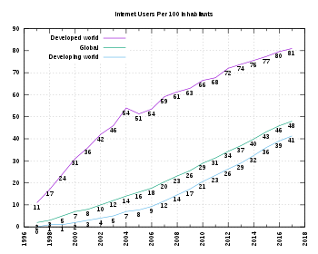

Digital Divide
Causes of the Digital Divide
Social
It seems to be that young people feel more comfortable with the new technology and are able to benefit from it more than older people. Older people are less likely to have a computer and are less likely to be interested in using the Internet. This factor will always affect the digital divide. This is because this factor brings out the individuality in everyone by classing them by their gender, education/literacy level, or even being. Old people especially try to divert away from technology because they don't know how to use it whereas children these days are bought up with technological devices so are more used to it and know their way around them. It is also to be noted that females take less interest in technology compared to boys which may bring about the width of the digital divide widening because these people do at least have access to the technology whereas there are people who would like access to technology but may be let down by their financial status. Some people can also just be part of a social group who oppose to the use of technology or belong to a specific ethnicity which can impact on how much access you may have to technology.
